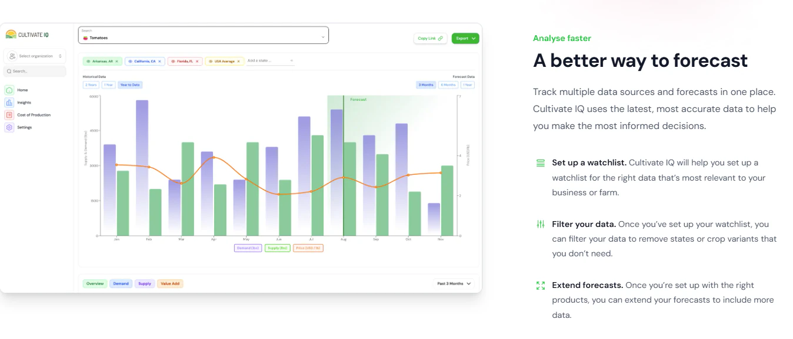
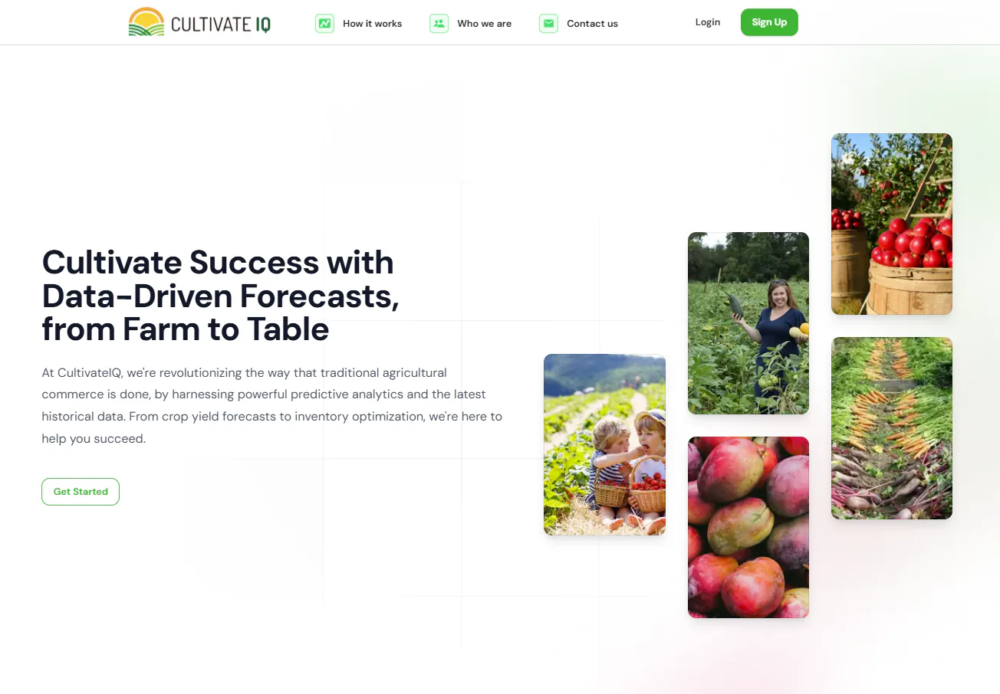

Regional food systems
CultivateIQ: agribusiness price forecasting with AI pipelines
CultivateIQ is an agribusiness price forecasting and decision support platform for small and midsize farmers and food distributors. It is being developed at the University of Arkansas I³R under the NSF Convergence Accelerator program and is entering its commercialization phase with a minimum viable product.
As product developer and technology transfer lead, I work on the transition from academic research prototype to commercially viable product, integrating demand forecasting, supplier behavior modeling, and regional market analytics, with price forecasting built on AI pipelines.
- Role
- Product developer and technology transfer lead, 2025 – present
- Program
- NSF Convergence Accelerator, University of Arkansas I³R
- Intellectual property
- IP disclosure filed in 2025: agribusiness price forecasting tool for small and midsize farmers (CultivateIQ core algorithm), University of Arkansas
- Website
- cultivateiq.org




Screenshots from the CultivateIQ website.